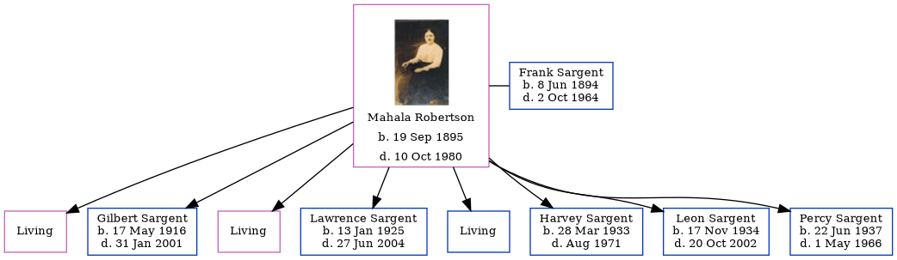

Mahala Sargent (née Robertson) 1895 - 1980
[ Home ] | [ Calendar ] | [ Surnames Index ] | [ Family History ]Mahala Robertson, the wife of Frank Edward Sargent (the third cousin three-times-removed on the mother's side of Nigel Horne), was born in Indiana, USA on Sep 19, 18951 and married Frank (with whom she had 8 children: Rosa, Gilbert Jake, Pearl, Lawrence Leroy, Cletus Edward, Harvey A, Leon Burton and Percy B, along with 3 surviving children) in Kankakee, Illinois, USA on Feb 17, 19143.
Throughout her life, Mahala lived in several places: in Newton, Indiana, USA on Jan 1, 19204; in Jackson, Indiana on Apr 1, 19305; and in Lake Village, Indiana on Apr 18, 19406.
She died on Oct 10, 1980 in Morocco, Indiana2.
Children
- Gilbert Jake was born on May 17, 1916
- Lawrence Leroy was born on Jan 13, 1925
- Harvey A was born on Mar 28, 1933
- Leon Burton was born on Nov 17, 1934
- Percy B was born on Jun 22, 1937
Citations
- Social Security Death Index - Findmypast
- Find A Grave http://www.findagrave.com
- United States Marriages - Findmypast
- US Census 1920 - Findmypast (was age 24 and the wife of the head of the household)
- US Census 1930 - Findmypast (was age 33 and the wife of the head of the household)
- US Census 1940 - Findmypast (was age 44 and the wife of the head of the household)
Media
Frank Sargent - Mahala - gravestone

Mahala Robertson
Social Security Death Index - USBMD/SSDI/310685631
US Census 1920 - USC/1920/004965827/01068/002
United States Marriages - FS/MAR/37839781/2
Family Tree
Generated by ged2site. Last updated on Nov 13, 2024